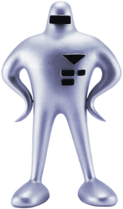
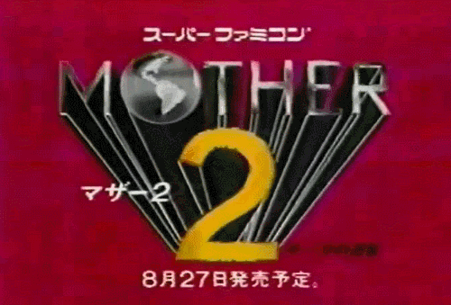
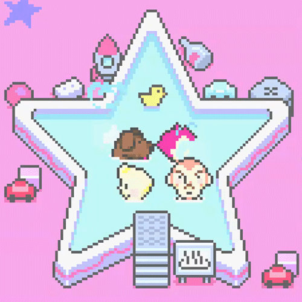

|
||
|
MOTHER/EarthBound (マザー Mazā)
 |
Es una franquicia muy popular del género RPG creada por el escritor Shigesato Itoi y dirigida por HAL Laboratory Inc., y a su vez distribuida por Nintendo. El nombre de la serie (mezclada con idioma inglés y japonés) hace alusión al planeta Tierra, ya que ambos nombres son de pronunciación inglés (salvo "MOTHER" que en rōmaji se dice Mazā). Juntando los nombres obtenemos "The Mother Earth" ("La Madre Tierra"). Los protagonistas son la mayoría niños porque se dice que ellos son el futuro y cambio de la vida mundial. |
|
|
Mother/EarthBound Beginnings  |
Mother (マザー Mazā?) es la primera entrega de la serie, que fue lanzada para el Famicom. Cuenta la historia de Ninten , un niño de 12 años que gracias a sus poderes psíquicos descubre el pasado amenazador para la Tierra por parte de Guiegue y es visitado por la Reina Mary en Magicant, que en realidad es María: la bisabuela de Ninten, secuestrada años atrás por la raza extraterrestre. Ninten conoce a Lloyd, Ana y Teddy en su travesía por las 8 melodías. En el año 2016 fue lanzado en la Consola WII U para la Virtual Console. | |
|
Mother 2/EarthBound  |
EarthBound: The War Against Giygas! (ＭＯＴＨＥＲ２ギーグの逆襲 Mazā Tsū Gīgu no Gyakushū?), conocido simplemente como EarthBound, es la segunda entrega de la saga, llamada en Japón MOTHER2 . En este juego la historia es similar a la de Mother: habla de Ness un niño de 13 años con vivienda en Onett que es elegido por la profecía, junto con otros 3 niños: Paula, Jeff y Poo, para salvar a la Tierra de una época de oscuridad, causada por Giygas. Ness también usa energía psíquica. | |
|
Mother 3  |
En primera instancia el juego estaba siendo desarrollado para Nintendo 64, y el personaje principal era Flint, pero el proyecto, que normalmente es referido como EarthBound 64, fue cancelado debido a que la fecha de lanzamiento caía cerca del final de la vida del sistema. El juego se lanzó finalmente el 20 de abril de 2006, y conservaba el típico estilo artístico de EarthBound y la historia general y personajes que fueron introducidos en la versión cancelada de Nintendo 64. Sin embargo, a diferencia de la historia original de Nintendo 64, la historia se centra en las crónicas de Lucas y su familia: Claus, Hinawa, Flint, Alec y Boney, además de sus compañeros Duster y Kumatora. | |
|
|